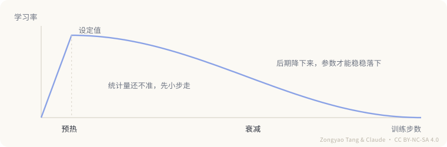

线索是：实际训练中影响最大的一个设置是学习率，它通常不是一个固定的数 → 学习率又和 batch 大小连在一起，多卡训练时这一点很要紧 → 另外几个常见的设置各自在防一种具体的毛病 → 训练得怎么样，要会看损失曲线 → 最后给一个不会漏的排查顺序。后面的系统单元关心“跑得快不快”；这一单元关心“训得对不对”。两类问题常常同时出现，要能分清。
第 1 部分 · 深度学习原理1.3 训练实践与诊断
这一单元回答模型训不动、训飞了、训得慢，各是什么原因？怎么从曲线上看出来？
承接 1.2：知道了损失和优化器的原理，这一单元看它们在实际训练中怎样出问题、怎样诊断。
- 学习率是最重要的一个旋钮：先预热，再衰减
- batch 大小和学习率是连在一起的
- 权重衰减、dropout、梯度裁剪：各自在防一种具体的毛病
- 读损失曲线：训练和验证两条线，几种典型的形状
- 排查的顺序：从最小的规模开始，先让模型过拟合一个 batch
讲解
1学习率是最重要的一个旋钮：先预热，再衰减
学习率决定每一步沿梯度方向走多远。太大，损失震荡甚至发散；太小，下降得极慢。实际训练中它不是一个固定的数：开头几百到几千步从接近零逐渐升到设定值（预热），之后逐渐降低（衰减）。
1.2 讲过梯度下降的一步：参数 ← 参数 − 学习率 × 梯度。梯度只在当前位置附近是准的，走得太远就不再是下坡的方向了。
太大。 每一步都迈过了谷底，跳到对面的坡上。轻则损失上下震荡、降不下去；重则越跳越高，损失变成无穷大或 NaN。这叫发散。
太小。 方向是对的，但每步只挪一点点。损失在降，只是慢得不值得等。
为什么要预热。 训练刚开始时有两个特殊情况：
- 参数是随机初始化的，离任何合理的解都很远，梯度很大，而且各层之间的大小差别悬殊。
- Adam 靠梯度的滑动平均来估计每个参数该走多大的步（1.2）。头几步里这个估计只基于一两个样本，很不可靠。
这时用正常大小的学习率，很容易一步迈到一个很差的位置，之后要花很久才能恢复，甚至恢复不了。预热就是在统计量稳定下来之前先小步走。Transformer 对这一点尤其敏感，几乎所有的训练配置都带预热。
为什么要衰减。 随机梯度下降的每一步都带着噪声（每个 batch 的梯度不一样）。学习率固定时，参数会在最优点附近不停地晃，晃的幅度和学习率成正比。训练后期把学习率降下来，晃动的幅度随之变小，才能稳稳地落下去。常见的衰减方式是按余弦曲线从设定值降到接近零。

常见的安排：先线性预热到设定值，再按余弦曲线降到接近零 怎么选设定值。 没有公式。实用的办法是在对数尺度上试几个值（比如每次差三倍或十倍），各跑一小段，看损失曲线：选“下降最快而又不震荡”的那个，再往小里取一点留余量。别人的配置可以作为起点，但要注意它对应的 batch 大小（下一节）。
从曲线上认出学习率的问题。
- 一开始损失就猛涨或变成 NaN：太大，或者没有预热。
- 损失下降但锯齿很大，时不时出现尖峰：偏大。
- 损失几乎是一条缓慢下降的直线：偏小。
- 前期下降正常，后期停在一个水平上轻微抖动：该衰减了。
打个比方像开车下一段陌生的山路：刚起步时不知道路况，先慢慢开；路熟了就提速；快到目的地要找具体的停车位，再减速。
所以调一个训练，先调学习率。它对结果的影响通常比其他所有超参数加起来都大；而且合适的值会随模型大小、batch 大小、优化器变化，不能照搬。
出处UDL §6.2 末：学习率调度UDL 第 6 章注释：学习率预热- 上一节说别人的学习率不能照搬，一个主要的原因在这里。
2batch 大小和学习率是连在一起的
batch 越大，梯度的噪声越小、越接近“真实”的方向，可以放心地迈更大的步。经验上，batch 放大 k 倍，学习率也可以放大接近 k 倍（配合更长的预热）。反过来，只改 batch 而不动学习率，训练的行为就变了。
batch 给的是什么。 一个 batch 的梯度是其中每个样本梯度的平均。样本是随机抽的，所以这个平均值是“全体数据的梯度”的一个带噪声的估计。batch 越大，平均掉的噪声越多。
对步长的影响。 噪声大时，单步的方向不太可靠，学习率就得小，靠很多小步把噪声平均掉。噪声小了，同样的可靠程度下可以迈更大的步。一个粗略但常用的规律是“线性缩放”：batch 乘以 k，学习率也乘以 k。UDL 第 6 章提到，随机梯度下降的行为主要取决于“学习率和 batch 大小的比值”，说的是同一件事。
这个规律有适用范围：
- batch 很大时不再成立。学习率不能无限放大，超过某个值就会发散，而这个上限和 batch 无关。
- 学习率放大了，预热就要更长，否则开头更容易出问题。
- 对 Adam 这类自适应的优化器，关系没有那么严格的线性，有时用平方根缩放更合适。
所以它是一个起点，放大之后仍然要看曲线。
大 batch 不是免费的。 处理同样多的数据，batch 大 k 倍，参数更新的次数就少 k 倍。如果学习率能相应地放大，每一步走得更远，总体进度不变，而每一步在硬件上更高效（0.2）。如果学习率放不大，就是用更少的步数走同样的步长，训练效果会变差。这就是“batch 不是越大越好”的原因。
在多卡训练里。 7.1 讲过，N 张卡的数据并行等价于把 batch 放大 N 倍。于是加卡时有两种选择：
- 每张卡的 batch 不变：有效 batch 变成 N 倍，吞吐最高，但学习率和预热要重新调。
- 每张卡的 batch 缩小到 1/N：有效 batch 不变，训练行为和单卡一致，不用重新调；但每张卡可能吃不饱，吞吐打折扣。
实际常取前者。所以把一个单卡上调好的训练搬到多卡上，发现“损失下降得比以前慢”，先别怀疑分布式的实现，多半是学习率没有跟着有效 batch 调整。
梯度累积。 显存不够放大 batch 时，可以连续算几个小 batch 的梯度、加起来、再更新一次（1.1 讲过梯度是累加的）。效果等同于一个大 batch，学习率也按大 batch 来设。
打个比方像问路：只问一个人，他指的方向可能有偏差，你不敢走太远就得再问；一次问一百个人取多数，方向可靠得多，可以一口气走远一些。
所以多卡训练不只是“更快”。7.1 讲过，8 张卡等价于 8 倍的 batch。学习率不跟着调，就是在用一个对这个 batch 来说偏小的学习率，白白浪费了大 batch 的好处。
出处UDL 第 6 章注释：学习率与 batch 大小之比- 除了学习率，训练配置里还有几个几乎总会出现的设置。弄清每个是为什么而设的。
3权重衰减、dropout、梯度裁剪：各自在防一种具体的毛病
权重衰减每一步都把参数往零拉一点，防止它们长得过大去死记训练数据。dropout 训练时随机关掉一部分神经元，防止网络过分依赖少数几条通路。梯度裁剪在梯度的整体大小超过一个阈值时把它按比例缩小，防止偶尔出现的巨大梯度一步把训练带飞。
权重衰减。 1.2 讲过过拟合：模型记住了训练数据的细节，在没见过的数据上表现差。记住细节往往需要一些很大的权重，让输出对输入的微小变化反应剧烈。权重衰减在每一步更新时，额外把每个权重乘以一个略小于 1 的数（比如 0.9999）。没有被梯度持续“支持”的权重会慢慢缩小。结果是模型偏向更平滑的函数。
它在数学上等价于在损失里加一项“所有权重的平方和”（L2 正则化），对普通的梯度下降两者完全一样。对 Adam 则有区别：把这一项加进损失，它的梯度会被 Adam 的自适应步长扭曲。AdamW 把衰减从梯度里拿出来，直接作用在权重上。现在训练 Transformer 用的基本都是 AdamW。
dropout。 训练时，每一步随机把一部分神经元的输出置为零（比如 10%）；评估时全部保留。网络不能指望任何一个神经元一定在场，被迫把信息分散到多条通路上。它的效果类似于同时训练很多个略有不同的网络再取平均。
什么时候用：数据相对于模型较少、容易过拟合的时候。数据极多的大规模预训练里，模型连训练集都还没拟合好，过拟合不是主要问题，dropout 常常设成 0。
梯度裁剪。 训练中偶尔会遇到损失曲面上很陡的地方，某一个 batch 的梯度比平时大几十上百倍。按这个梯度走一步，参数会被甩到很远的地方，之前的进展全丢了。裁剪的做法：算出所有参数的梯度合在一起的长度（范数），如果超过阈值（常用 1.0），就把整个梯度按比例缩小到刚好等于阈值。方向不变，只限制步子的大小。
它是一道保险，平时不起作用。可以把每一步裁剪前的梯度范数记下来画成曲线，这条曲线本身就是很有用的诊断信息：
- 平稳、偶有尖峰：正常，裁剪在尖峰处生效。
- 长期顶在阈值上：几乎每一步都在裁剪，相当于变相降低了学习率。学习率可能偏大，或者模型本身不稳定。
- 越来越大：训练在走向发散。
- 趋近于零：梯度消失，或者已经收敛。
怎么判断过拟合。 看训练集和验证集上的两条损失曲线（下一节）。两条一起降，没有过拟合，不需要加强正则化；训练损失继续降、验证损失开始升，才是过拟合。
打个比方像骑车的三样保护：权重衰减是限速，不让你越骑越猛；dropout 是轮流蒙住一只眼练习，不让你只依赖一种感觉；梯度裁剪是刹车，突然下陡坡时不至于失控。
所以这几个设置不是“加了总没坏处”的装饰。每个都对应一种症状：前两个对付过拟合，梯度裁剪对付不稳定。没有那个症状时加上它们，只会让训练变慢或变差。
后面会用到 读损失曲线：训练和验证两条线，几种典型的形状出处UDL §9.1.2 L2 正则化UDL §9.3 提前停止与其他启发式方法- 设置都讲完了。训练跑起来之后，怎么知道它进行得好不好？
4读损失曲线：训练和验证两条线，几种典型的形状
把训练集上的损失和验证集上的损失画在一张图上。两条都高且不降，是没学会；训练的低、验证的高而且差距在拉大，是过拟合；突然冲到很高或变成 NaN，是发散；长期走平，是遇到了平台。每种形状指向不同的原因。
先准备好两份数据。 训练集用来更新参数。验证集是从同样的来源留出来、不参与训练的一小部分，每隔一段时间在上面算一次损失（在
no_grad里，2.2）。它代表“没见过的数据”。知道起点应该在哪。 训练开始前，模型的输出接近随机。对一个有 V 个类别的分类问题（语言模型的 V 就是词表大小），随机猜的交叉熵损失是 ln V。GPT-2 的词表约 5 万，初始损失应该在 10.8 左右。第一步的损失如果远高于这个数，说明初始化有问题；远低于它，说明数据里有泄漏（比如标签被模型直接看到了）。这是 Karpathy 反复强调的一个检查，只要几秒钟。
几种形状。
形状 说明 先查什么 两条线都停在初始值附近 没有在学 学习率是否太小；梯度有没有传回去；数据和标签是否对得上 两条线一起稳定下降，差距很小 正常，而且还没训够 继续训，或者加大模型 训练线继续降，验证线走平后回升 过拟合 更多数据、加强正则化、提前停止 一开始就猛涨或变成 NaN 发散 学习率太大、没有预热、数值问题 训练中途突然出现尖峰，之后恢复 遇到了异常的 batch 或陡坡 梯度裁剪是否生效；那个 batch 的数据 降到某个水平后长期走平 平台 学习率是否该衰减；模型容量是否到头 验证线比训练线还低 两份数据不同分布，或者 dropout 的影响 数据的划分方式 几个容易误读的地方。
- *噪声。* 训练损失是每个 batch 算一次，本身就在抖。看趋势要做平滑（取最近若干步的平均）。但平滑会把尖峰抹掉，所以原始的和平滑的最好都看。
- *横轴。* 比较两次实验时，要想清楚横轴是“步数”还是“处理过的样本数”还是“时间”。batch 大小不同的两次训练，按步数比和按样本数比，结论可能相反。关心系统性能时（0.2），横轴用时间才有意义。
- *周期性的波动。* 损失每隔固定的步数出现规律的起伏，通常是数据没有打乱好，同一类样本聚在了一起。
损失不是唯一要看的。 最终关心的是任务指标（准确率、生成质量）。损失下降而指标不动的情况也有。0.2 说过，一次完整的记录包括吞吐、MFU、峰值显存、模型效果四样，这里讲的就是第四样怎么看。
打个比方像体检时的两项指标要放在一起看：单看一项正常说明不了什么，两项的相对关系才能区分是哪种情况。
所以训练时一定要留出一份验证数据，并且两条曲线都记。只看训练损失，你既发现不了过拟合，也分不清“模型不行”和“数据有问题”。
- 曲线告诉你“有问题”。要找出问题在哪，需要一个不靠运气的顺序。
5排查的顺序：从最小的规模开始，先让模型过拟合一个 batch
训练不对劲时，不要在完整的规模上猜。把问题缩到最小：取一个 batch，反复训练它。一个正确的模型和训练循环，应该能在几百步内把这一个 batch 的损失降到接近零。做不到，说明代码有错；做得到，再逐步放大规模，每次只加一样东西。
神经网络的错误和普通程序不同：很少会崩溃报错，更多是悄悄地学得差一点。数据预处理错了一步、标签错位了一格、某一层的梯度没有传回去，程序都能照常跑完，只是结果不好。所以需要一套主动的检查，每一步只验证一件事。下面的顺序来自 Karpathy 那篇文章的思路。
一、先看数据。 打印几个样本，包括送进模型之前的最后形态（经过所有预处理之后）。确认输入和标签对得上。非常多的问题在这一步就能发现。
二、检查初始损失。 上一节讲的：应该接近 ln V。
三、过拟合一个 batch。 固定一个 batch，关掉 dropout 和数据增强，反复训练。
- 损失顺利降到接近零：模型有能力表达，梯度能传到每一层，优化器在工作，损失函数和标签是对应的。
- 降不下去：以上某一环有错。常见的有：某些参数没有交给优化器；某一步不小心把计算图断开了（2.2 的 detach）；标签和预测的维度对错了；学习率差了几个数量级。
这一步顺便给出了 0.2 里的“吞吐上限”：反复喂同一个 batch，没有数据加载的开销。一个测试，同时检查了正确性和性能。
四、放大到一小部分数据。 比如全部数据的 1%。这时应该能看到训练损失降得很低、验证损失明显更高，也就是过拟合。这说明验证的流程是对的。
五、放到全部数据，再加正则化。 到这一步才开始关心泛化：加上 dropout、权重衰减、数据增强，调学习率的安排。
六、最后才是提速。 混合精度、编译、多卡。每加一样，都对照一次：损失曲线应该和加之前基本重合。
把“训得对不对”和“跑得快不快”分开。 这是这一单元和后面所有系统单元的接口。一个现象常常两边都可能是原因：
- 换成多卡后损失下降变慢：可能是有效 batch 变了而学习率没调（这一单元），也可能是梯度同步的实现有问题（7.1）。
- 打开混合精度后出现 NaN：可能是数值溢出（2.6），也可能学习率本来就在发散的边缘。
- 打开编译后结果变了：先关掉编译确认即时执行是对的（2.5）。
原则和 0.2 一样：每次只改一处，改完对照基线。只是这里的基线是损失曲线，而不是吞吐。
排查：损失变成 NaN 时怎么找原因
NaN 一旦出现就会传染：任何和它运算的结果都是 NaN，一步之后所有参数都是 NaN。所以要找的是它第一次出现的地方。
先看它是什么时候出现的。
- 第一步就是 NaN：多半是输入数据里就有 NaN 或无穷大，或者初始化、模型结构有明显的数值问题（除以零、对零或负数取对数）。
- 跑了一阵之后出现，之前损失在震荡上升：发散。学习率太大，或者没有预热、没有梯度裁剪。
- 跑了很久、一切正常，突然出现：某个特殊的 batch 触发了数值问题，或者混合精度下某个值溢出了。
定位到具体的运算。
torch.autograd.set_detect_anomaly(True)
打开后，反向传播中一旦某个节点算出 NaN，就会报错，并且打印出前向时创建这个节点的那一行代码。它会让训练慢很多，只在排查时开。
也可以自己在关键位置加检查：
assert torch.isfinite(loss), f"loss 不是有限值，step={step}"（注意这是一个同步点，3.6；排查时无所谓，排查完要去掉或降低频率。）
几个常见的源头。
log(0)、0/0、sqrt一个略小于零的数（舍入误差造成的）。给分母或对数的参数加一个很小的数。exp一个很大的数。softmax 和交叉熵用框架提供的版本，它们内部做了防溢出的处理（4.4 讲过减最大值的技巧）。- 注意力的掩码把某一行全部遮住了，softmax 的分母是零。
- 混合精度：16 位下溢出。把可疑的那一段放回 32 位（2.6）。
- 数据：某个样本是空的，或者含有异常的数值。把出问题那一步的 batch 存下来，单独喂给模型重现。
记下梯度范数的曲线（上面讲梯度裁剪时提过）。很多“突然”的 NaN，其实在梯度范数的曲线上早有征兆：出事之前的几百步里它一直在爬升。
打个比方像修一条不亮的灯串：不要一整串地摆弄，先单独测一个灯泡亮不亮，再接两个，再接一段，问题出在哪一步一目了然。
所以“过拟合一个 batch”是训练代码的冒烟测试，写完任何新模型都应该先做。它几分钟就能做完，能排除掉一大半的错误，而这些错误在完整的训练里要跑几个小时才看得出来。
后面会用到 一次只改一处，每次都留下数据
串起来
学习率先预热再衰减。它和 batch 大小成比例地联动，多卡训练改变了有效 batch，学习率要跟着调。权重衰减防止过拟合，梯度裁剪防止个别步把训练带飞。训练和验证两条损失曲线的形状能告诉你是欠拟合、过拟合还是发散。排查时从最小的规模开始：先让模型过拟合一个 batch。
考考自己
不看讲解，用自己的话讲一遍。
- 为什么学习率要先预热再衰减？学习率太大和太小时，损失曲线各是什么样子？
- 为什么 batch 大小变了，学习率通常要跟着变？这对多卡训练意味着什么？
- 权重衰减、dropout 和梯度裁剪分别解决什么问题？怎样判断该不该用它们？
- 训练损失和验证损失的曲线有哪几种典型的形状？各自说明什么问题？
- “让模型过拟合一个 batch”这个测试能检查出什么？训练出问题时，推荐的排查顺序是什么？
术语
- learning rate schedule
- 学习率调度
- warm-up
- 预热
- weight decay
- 权重衰减
- gradient clipping
- 梯度裁剪
- overfit
- 过拟合
- validation set
- 验证集